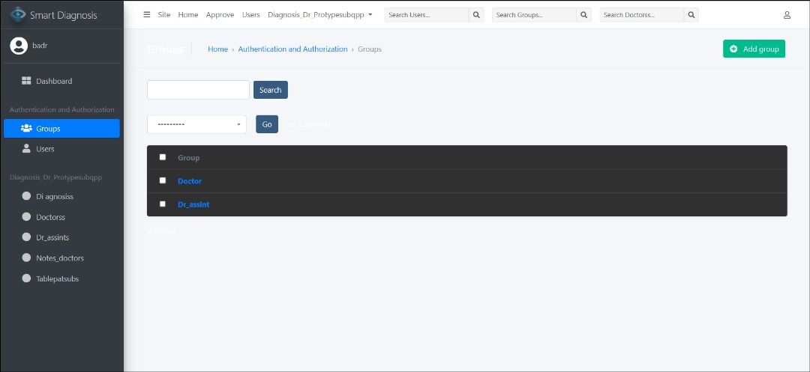
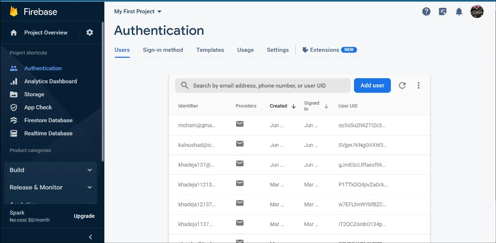
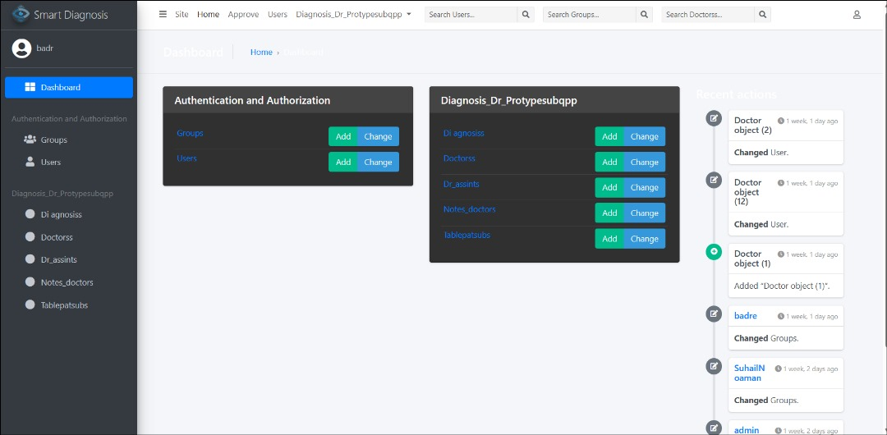
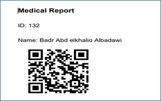
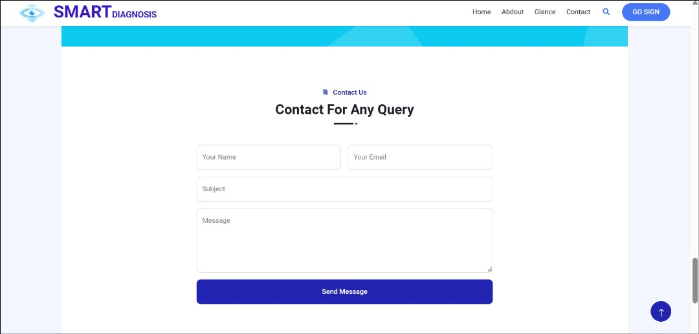
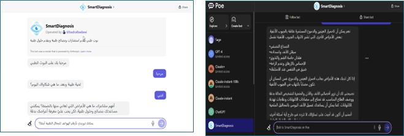
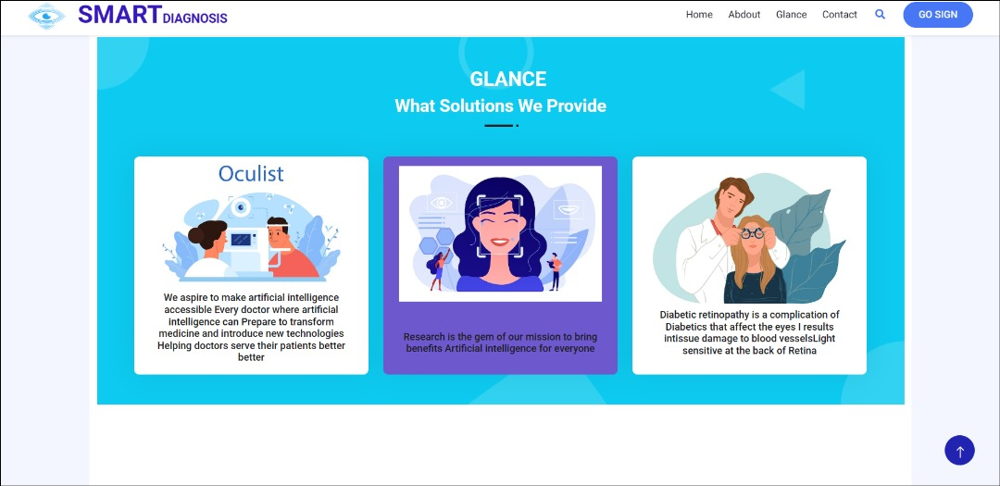
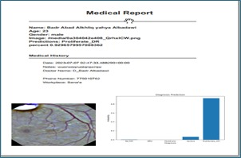

📸 صور من النظام









نظام شامل من بداية دخول المريض الى اعلان نتيجة التشخيص يستغني النظام عن المشاكل التي كان يعاني منها المريض والطبيب من مراحل التشخيص الاعتيادي ومن ضمنها القطر التي تسبب تشويش الرؤية التي تستمر لمده اقصاها 3 ايام والحقن بالصبغة وتاخر التشخيص لبعد ايام وايضا الزحمة المفرطة في مشتشفيات العيون والتي تسبب عدم المراجعة الدورية لمريض السكر الى فقدان البصر